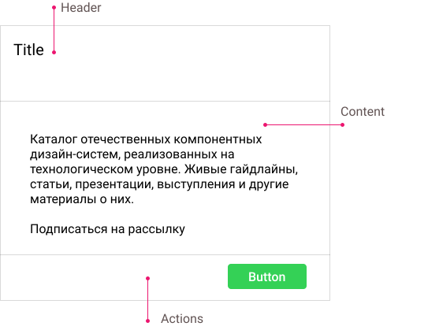

<div style="
padding: 24px;
background-color: white; height: 100%;">
  <h2 style="padding-left: 20px;">Card</h2>

  <div style="margin-left: 20px;">
    Карточку используют для отображения контента, относящегося к одной теме.
    Контент может состоять из нескольких элементов разных типов и размеров.
  </div>

  <div style="margin-left: 20px;">
    <h4>Анатомия карточки</h4>
    <div>
      
    </div>
  </div>

  <div style="margin-left: 20px;">
    <h4>Создание карточки</h4>
  </div>

  <div style="margin-left: 20px;">
    Перейдем в папку с компонентами и создадим новый модуль.
  </div>

</div>